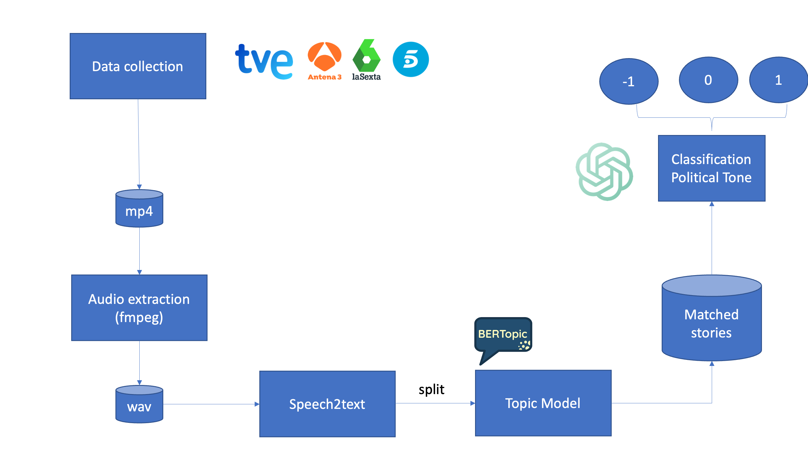

Methodology
This page describes the analytical and computational methods behind SMM's continuous monitoring of Spanish television news. The pipeline integrates data engineering, machine learning, and natural language processing to study political tone, coverage diversity, and cross-outlet agreement.
Analytical Pipeline
The diagram below outlines the key stages of our workflow — from raw data collection to content classification and visualization.

Data Collection and Processing Steps
1. Data Collection: News videos are gathered from major Spanish channels, including TVE, Antena 3, laSexta, and Telecinco.
2. Audio Extraction: Each video is converted to WAV format using FFmpeg.
3. Speech-to-Text: We use Google’s Speech-to-Text API for automatic transcription.
4. Topic Modeling: Topics are extracted using BERTopic, a transformer-based clustering method.
5. Tone Classification: Large Language Models (LLMs, currently GPT-4) assign tone scores to each political reference (−1 negative, 0 neutral, 1 positive).
Entropy Calculation
Entropy has been widely used as a measure of news disagreement across outlets (see, for example, Gentzkow et al. 2023). First, we filter dates with coverage from at least 50% of the monitored outlets to avoid bias due to missing data. Then, for each day \(d\), we compute the share of time each channel \(c\) devotes to story \(s\):
\[ \text{entropy}_{d} = -\sum_{s=1}^{S}\sum_{c} \frac{\text{time}_{scd}}{\text{total\_time}_{cd}} \times \log\!\left(\frac{\text{time}_{scd}}{\text{total\_time}_{cd}}\right) \]
Lower entropy corresponds to higher similarity in coverage—i.e., stronger alignment across outlets in the topics emphasized that day.
Political Tone Measurement
Political tone is computed as the average of LLM-classified tone values across all mentions of each party within a given period. For every channel-party pair, we calculate:
\[ \text{Tone}_{c,p,t} = \frac{1}{N_{c,p,t}} \sum_{i=1}^{N_{c,p,t}} \text{tone}_{i} \]
where \(N_{c,p,t}\) denotes the number of mentions of party \(p\) in channel \(c\) during time \(t\). Monthly tone averages are then visualized with confidence intervals to show systematic differences in sentiment across networks.